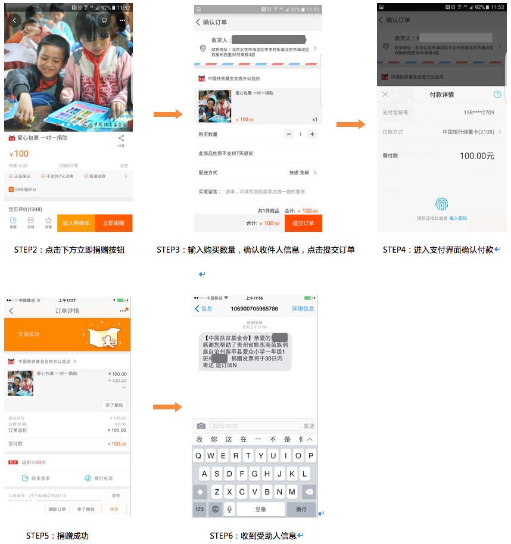

一、欢迎你参加「善行100」
欢迎你报名参加善行100，也祝贺你成为善行100志愿者。首先，要感谢你对公益事业的热情和对我们的信任，在志愿活动的过程中会遇到很多的困难和挫折，希望大家能够在活动过程中成长起来，克服困难，坚持到底！志愿者服务意味着奉献和付出，也是一种历练和成长。在未来的道路上，我们将一如既往，与你同行，分担你的艰辛，分享你的荣耀，共同为中国公益而行。
此小册子旨在向你介绍有关参加「善行100」的各项资料及所有安全守则，务请细心阅读。希望有你的支持，活动能够顺利进行。
善行100志愿者活动组织咨询：010-82872688-635
爱心包裹项目捐赠咨询：010-62655199
二、劝募八步
多准备-敢开场-解抗拒-讲项目-答疑惑-促捐赠-细办理-勤反馈
1. 多准备
装备自己：统一穿着善行100服装，持学生证、活动授权书、三折页、捐赠凭据样例等劝募必需品。
公益体验站：海报和桌子一定布置整齐，放置在人流量大比较显眼的地方。
2. 敢开场-勇敢的说出自己的开场白
要点：表明身份、表明活动性质和内容
志愿者：（标准版）您好，我是***大学的志愿者！我们现在正在举行一个一对一关爱贫困地区儿童的公益活动，我花一分钟时间给您简单介绍一下……
志愿者：您好，我是中国扶贫基金会的志愿者，也是***大学的学生。冬天就要到了，我们正在为贫困地区的小学生筹备暖冬的礼物，我可以给您简单介绍一下吗？
3. 解抗拒-用一句话让路人停下来听你说话
要点：突出活动关键点，解除路人抗拒点
我没时间—志愿者：只需要一分钟您就可以了解清楚，就可以一对一的帮助一个贫困地区的孩子。
我不信—志愿者：我们是跟邮局一起合作的公益活动，您的捐款是直接交给邮局的，我们志愿者是不收取现金的。而且中国扶贫基金会是国家民政部认证的5A级基金会，是一个真正的NGO组织，我们能保证善款真的能用到孩子身上。
我已经参与过了—志愿者：那您还是挺有爱心的，我们这个是一对一的帮助贫困地区的孩子，不知道您之前参与的是什么样的？而且我觉得您也有能力帮助更多的人，所以您也可以了解一下我们这个公益活动。
4. 讲项目-向路人介绍项目内容和特点
要点：一对一、透明度（反馈）、体验性强、门槛低、一起成长
志愿者：爱心包裹项目是由中国扶贫基金会发起的一项全民公益活动，致力于改善贫困地区农村小学生综合发展和生活条件。您可以一对一的选择捐赠的地区和孩子，而且捐赠后就能知道孩子的具体信息。您只需要捐赠100元或者200元就可以参与，而且像前一段时间贵州儿童为取暖钻进垃圾桶死亡的事件，您应该也听说过，我们的善款就将用来为贫困地区的儿童购买温暖包，帮助他们度过一个温暖的冬天。
5. 答疑惑-解答路人提出的关于项目的疑问
要点：专业、连贯、引导
爱心包裹的物品是怎么选的？—志愿者：一方面，供应商是经过招标产生的，都是行业里有实力有信誉的企业。美术包供应商是贝发集团和真彩文具，温暖包是红豆的，这些公司都是爱心包裹的长期供应商。另一方面，这些包裹里面的物品都是经过实地调研，当地校长和学生反馈，是他们最需要的东西，而且这些物品的捐购价格是远低于市场价格的。
我怎么知道钱是用在孩子身上了？—志愿者：我们的项目是非常透明的，您可以选择捐赠地区和孩子的性别、年级，捐赠后您可以收到三个反馈：一是捐赠凭据，可以知道受益学生的姓名地址和学校，知道自己的钱捐给了谁；二是学生收到包裹后会给您寄一个回音卡表示感谢；三是会收到中国扶贫基金会开具的捐赠票据。
这些地区和学校是怎么选出来的？—志愿者：我们这些地区都是国家级贫困县，而且前期都会经过实地调研，确定他们确实需要帮助。
我可以捐自己的东西吗？—志愿者：在这个项目是实行全校覆盖的模式的，每一个受益儿童都有一个一对一的捐赠人，捐物资是没法操作的；而且在前期调研中，贫困地区绝大部分校长认为应该提供统一的包裹，一是为了体现公平性，避免学生攀比；二是统一的用具便于老师进行统一辅导，可供学生同步开展学习。
6. 促捐赠-引导路人捐赠
要点：因人而异、突出重点、会说故事
标准版—志愿者：您看，我给您介绍的都挺清楚的了，您也是一个有爱心的人，现在有很多人参与了，我们希望您也能参与进来。其实，200元对于城里人来说，也就是一顿饭的钱，但是200元温暖包对贫困地区的孩子来说就像是个奢侈品。他们不用再为了取暖钻垃圾桶，也不用满手都是冻疮，200元能让他们度过一个温暖的冬天。
有孩子的—志愿者：您可以以孩子的名义进行捐赠，还可以让孩子从小就知道奉献爱心，而且还可以帮助孩子结识贫困地区的小伙伴。
其他版—志愿者：我们这个活动惠及全国的贫困地区，您可以选择帮助自己的家乡或者西部的孩子。另外，您还可以选择帮助哪个年级的孩子，是男孩还是女孩。温馨提示：让人捐款的理由一定要因人而异，不同的劝募对象要说不同的话，但万变不离其中，项目透明性（一对一）、互动性（获得孩子们的回音卡）、门槛低（100元、200元）一定是成功劝募的理由。因此，需要每个志愿者将这些理由熟记在心。
注意：以公众自愿为原则引导捐赠。
7. 细办理—仔细认真为捐赠者办理
要点：填写爱心包裹捐赠登记单、反馈捐赠凭据
A邮局网点：指导捐赠人填写《爱心包裹捐赠登记单》（三联单）——带领捐赠人到邮局柜台办理——现场将《爱心包裹捐赠凭据》反馈给捐赠人

B．捐赠方式全新升级—开通支付宝线上捐赠
爱心包裹支付宝捐赠平台是基于中国扶贫基金会天猫旗舰店升级的全新一对一捐赠渠道，打造“爱心包裹+移动互联网”的推广方式，深入探索移动互联网时代下“人人可公益”的新模式。支付宝线上捐赠更灵活、更便，捐赠完成后即可收到有受益人详细信息的短信。支付宝线上捐赠步骤如下：
STEP1：扫描二维码（活动开始之后，会给各个高校提供专属的二维码，扫描专属二维码后直接跳转到爱心包裹宝贝页面）
注意！！！在邮局捐赠时容易出现的错误：
a.捐赠人捐款后，如需要回音卡、捐赠票据等反馈信息，则需要留下捐赠人真实姓名、详细地址、手机、邮箱等完整的信息。
b.地址要具体到门牌号，否则捐赠票据和回音卡都无法寄到捐赠人手中，例如：北京市海淀区双榆树北里19号榆苑公寓4号楼1单元102.
c. 如果遇到不留名的捐赠人，应该及时填写爱心包裹捐赠登记单（三联单），以“捐赠人单位（名称）”处填写“爱心人士”，通讯地址及联系方式建议留小组组长相关信息。以便捐赠人后期想捐赠咨询时，可以反馈相关捐赠信息。
d.请注意在邮局捐赠时候，要检查清楚邮局工作人员生成的捐赠凭据信息是否正确，若不正确，请当天到邮局办理更正。如果过了捐赠当天，请在3个工作日内致电中国扶贫基金会爱心包裹热线电话：010-62655199。
三、劝募技巧
（一）定目标、喊口号
1、制定个人劝募目标
每个志愿者出发抵达公益体验站侯，要填写《善行者日志》，写下今天的目标。有目标才会有动力，建议每名志愿者每天至少帮助1名小学生募集到爱心包裹。
2.目标人群
学会分辨目标人群，针对不同的目标人群进行分别的劝募。带孩子的父母、主动关注海报的人、情侣等更容易劝募成功。
3、喊口号
和小组成员一起喊出团队口号，提高士气。
（二）分组与位置
1、分组
劝募不能孤军奋战，最好男女搭伴一起劝募，共同确立今天的劝募目标，建议2人一组。
2、位置
志愿者尽量分布体验站可视范围内，如不在可视范围内，可试着把人引导公益体验站，这样可以增强可信度
（三）主动出击
主动出击是劝募成功的一大法宝，根据历年统计数据显示，拦住10个人，会有1个人停下脚步，10个停下脚步的人中，会有1个人捐款。
（四）熟悉项目
志愿者在开展活动之前，一定要认真学习项目知识，对于项目核心问题做好倒背如流才能有效留住捐赠人。
（五）调整心态
要学会调整心态，遇到不理睬或者恶语相向的人，要理解他们并告诉自己这是他们的损失。
（六）吸引注意力
用气球、抱抱、志愿者肢体语言、播放视频等方式吸引路人注意力
三、常见问题
问题一：爱心包裹真的值这些价格吗？
答：爱心包裹里面的善品，都是经过市场实地调查核实的，单个学生型美术包、温暖包中的善品采购及包裹、回音卡、捐赠票据邮递等费用的市场零售价都超出现有的捐购价格。你可以看看这个包裹里有多少东西……
问题二：为什么去年捐赠的没有收到捐赠票据和回音卡？
答：捐赠人所留地址不完整没有具体到门牌号、收信人等详细信息，致使捐赠人收不到或寄出后又退回去了。另外，如果捐赠人匿名捐赠，系统会默认为爱心人士，这样也无法寄出。
问题三：这些捐赠包裹的钱是怎么使用的？
答：100元捐购的学生型美术包，是为了圆一名贫困地区农村小学学生的彩色梦想。其中92元为包裹的采购费用及包裹、回音卡、捐赠票据（挂号信）的邮寄等费用，8元为项目执行与推广费用。200元捐购一个学生型温暖包，其中184元为包裹的采购费用及包裹、回音卡、捐赠票据（挂号信）的邮寄等费用，16元为项目执行与推广费用。
问题四：项目执行与推广费用是怎么回事？
答：中国扶贫基金会是社会团体，没有财政拨款来支持工作的开展，一定的管理费用是项目持续稳定发展和提高管理水平，确保资金使用透明的有效保障， 8%的管理费也是符合《慈善法》相关规定的；项目执行与推广费用主要用于项目执行过程中产生的相关费用，包括相关材料制作、捐赠人反馈服务、项目推广、活动组织等。
问题五：我多久能收到这些反馈？
答：一般20-30个工作日捐赠人可以收到中国扶贫基金会开具的捐赠票据；捐赠人完成捐赠后一般30-40个工作日左右，受助学生能收到包裹（寒暑假除外）；小学生收到包裹后，5-10个工作日捐赠人能收到起所关爱的小学生回音卡。
问题六：我为什么不能捐20元、50元的？
答：爱心包裹项目是一对一的资助一个贫困地区的孩子，每个包裹是100元或200元，零钱无法一对一的匹配一个孩子；另外零钱捐赠我们无法提供统一的反馈服务，不能保证项目的透明度。
问题七：我可以捐赠去年的孩子吗？
答：因为爱心包裹项目是采取的整校资助的原则，我们无法保证您要续捐的孩子所在学校的其他孩子都有人续捐，如果其他孩子没有人续捐的话就收不到包裹，会给孩子造成心理不平衡。所以我们不进行续捐操作。
七、五大原则
1、不做有损中国扶贫基金会和学校名誉的事：在善行100活动开展期间不以善行100名义或学校名义从事违背公益理念的事情。
2、不向捐赠人承诺自己能力范围之外的事：不随意承诺可以为捐赠人做什么，不随意承诺可以满足捐赠人的个性化要求。
3、不得以任何形式向公众募捐零钱：志愿者不得使用募捐箱等形式向公众筹集零钱。
4、不做违背捐赠人捐赠意愿的事：一旦捐赠人填写完成《爱心包裹捐赠登记单》，志愿者不得随意更改其内容。
5、不允许以任何理由接收捐赠人的现金：不允许志愿者接触捐赠人的现金，志愿者可以指导捐赠人进行线上或邮局捐赠。
四、安全守则
1、个人安全
1）切勿携带大量现金及贵重财物
2）至少与一名志愿者结伴劝募，与本组志愿者同去同返
3）请将手机、钱包、相机等随身携带
应变措施
1）个人财产丢失，应立即报警
2）如遇身体不适等状况，应立即休息，严重应及时送至医院
2、暴寒
暴寒的症状：疲倦、没精打采、皮肤冰冷、步履不稳、发抖、肌肉痉挛、口齿不清及幻觉等。
安全指引：活动前一晚必须睡眠充足，劝募过程中有适当的休息，饮用热水。
应变措施：进入室温较高地域做适当休息，做做热身运动，饮用热水，缓解寒冷。
3、雷雨
留心天气预报，避免在天气不稳定时劝募。下雨时，停止劝募活动。在户外应该携带雨伞、雨靴。
爱心包裹热点电话：010-62655199
善行100项目微博：@善行100
公益未来微信公众号：gongyiweilai